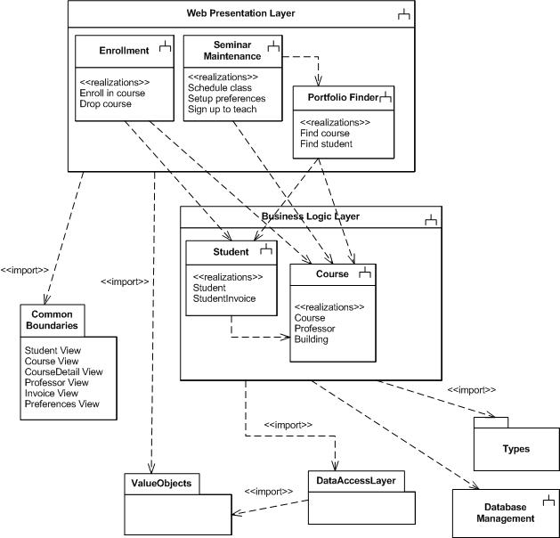
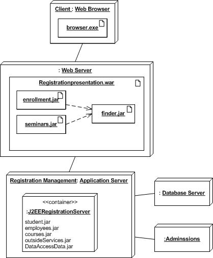

OUM |
Task Overview |
||
Method Navigation |
Current Page Navigation |
||
|
|
||||||||
The purpose of this task is to create a design for each operation that has been assigned to a particular component. The operations defined in the Behavior Analysis (AN.060) for each use-case package are reviewed and designed by defining the format, sequence, and responsibility required to support the Use Case scenarios.
In a commercial off-the-shelf (COTS) application implementation, this task is performed only for those requirements that can only be satisfied through custom-built components, which extend the functionality of the COTS system and/or integrate the COTS system with other COTS or legacy systems.
In addition, design details are added that augment the architectural views to define the components, their interfaces, and the nodes on which they will reside at runtime. Each operation is refined by adding more details to make it implementable (i.e., name, arguments, data types, and return values, etc.), and the responsibility of each component interface is designed by describing the process flow and algorithms (if necessary) for each.
For example, if during the Analyze Behavior (AN.060) task, the system operations were identified as:
- Query the database using the student’s id
- Calculate the students GPA using the GPA formula business rule
Then the design of those operations would look like this:
1) Operation signature: getStudent (studentID:Integer): StudentRecord
SQL statement: SELECT * FROM Students WHERE StudentId = 12345
Student Record returned:
- Student ID
- Student Name (last, first, mi)
- Address (street, city, state, zip)
- Home Phone
- Major
- Grade points earned
- Status
2) Operation signature: calculateGPA (totGradePointsEarned:int, totCreditHoursAttempted:float): GPA
Calculation: GPA = total amount of grade points earned / total amount of credit hours attempted
Result: A=4 grade points
B=3 grade points
C=2 grade points
D=1 grade point
WF/F=0 grade points
Once the behavior for each operation is designed, the overall functionality is organized into a runtime architecture based on the component’s responsibility and the technology being used.
The standard and recommended notation for completing this task is to use a UML class diagram, component diagram, and deployment diagram. If UML is used for this task you will specify how the required behavior of the system will be realized in the design components for each scenario in your use cases. This process validates that the data and access models can support the use cases and the Design Models are updated with design elements. This complements and supplements the Analysis Class Diagram previously defined in the Behavior Analysis (AN.060) work product.
This task may also be accomplished using a non-UML approach that employs other notational or textual techniques including entity-relationship diagrams (ERDs), pseudo-code or other descriptions of navigation or control logic, functional hierarchy charts, or flowcharts.
Ultimately, the Behavior Design is organized along with the Architecture Description (DS.040), the Software Components Design (DS.080), the Data Design (DS.090), and the User Interface Design (DS.130) into the Design Specification. The Design Specification is reviewed for defects prior to implementation and as necessary, the defects are corrected.
This task is executed in parallel with the following tasks:
C.ACT.DC Design - Construction
Component Behavior Design
The behavior design for a component reflects the detailed interaction between the classes and components for each scenario. This complements and supplements the diagrams and models created in the Analysis Model and the Module View of the Architecture Description (RD.130) to better explain them.
Typically, this work product would exist as part of the overall Design Model in a repository. In some cases, when it is necessary for sign-off or hand-off to a remote implementation team, the work product may be organized, along with other design work products, into a Design Specification (DS.140). Please see the Develop Design Specification (DS.140) task overview for further information and guidance.
You should follow these steps:
No. |
Task Step | Component | Component Description |
|---|---|---|---|
1 |
Organize the design. | Deployment, Component, Package Diagrams | Deployment Diagrams describe runtime artifacts and on which nodes they reside. Component Diagrams provide information about the required and provided interfaces for each component in the system. Package Diagrams provide a means to organize the design elements such as subsystems, classes, use case realizations, and various diagrams. |
2 |
Design the use cases. | Use Case Realization | Take each existing Use Case Specification document and and organize the classes and diagrams that will be used to realize the use case. |
3 |
Create/refine Interaction Diagrams. | Interaction Diagrams | Interaction diagrams show the detailed interaction between the design classes. You can use Sequence, Communication, or Timing diagrams depending on the way you need to understand interactions. |
4 |
Create/refine Class Diagrams. | Design Class Diagram | The Design Class Diagram is simply a class diagram in which the design details of each class, attribute, operation and association should be implemented. |
The goal of this task is to create a complete design structure that includes a package view, deployment view, component view, and any other low-level design artifacts necessary to move into Construction. You do this by enriching the existing Analysis Model (e.g., activity diagram, sequence diagram, collaboration diagram, etc.), adding the level of design detail necessary to build the components. Use Case Realization can be used as an organizing principle as you dig into the details of designing each element of your system. Similar to the Behavior Analysis task (AN.060), we use the Use Case Model (RA.023) and Use Case Specification (RA.024) to transform the Behavior Analysis into a Component Behavior Design.
Using the Behavior Analysis (AN.060) and Use Case Specification (RA.024) as a starting point, define the package structure and components being used. Work with the architect to decide how these components will be organized and work in the runtime environment.
Complex applications usually have several layers to them. Each layer has a number of discrete subsystems or components. Work with the architect to organize your subsystems into packages. You can use a package diagram like the one below to give a layout of your system design at an aggregate level. The little forks in the diagram indicate that the package is a subsystem. The dashed lines indicate dependencies among the packages.

For each subsystem / component specify what behavior that design element is responsible for. Often a subsystem is responsible for implementing one or more closely related use cases. Some components are responsible for implementing the behavior of an entity class to include interfacing with an underlying database management system. Without specifying all the details major functionality required by the system has been allocated to individual subsystems.
When your design involves treating your subsystems as components with interfaces, a component diagram can be used to show both the required and provided interfaces. This is another way to understand the design dependencies among your subsystems. The component diagram below shows how the front-end Enrollment subsystem interfaces with the Student component via the iStudent interface and the iInvoice interface.

With systems that have many artifacts deployed across several hardware platforms it is necessary to specify where those artifacts reside and their dependencies. This helps the designer make decisions about placing behavior on the most capable platform and not to overload one platform with too many responsibilities. The deployment diagram below shows the placement of executables, java jar files, and the contents of a J2EE container.

The Use Case Specification (RA.024) is comprised of a set of use case details (specifications) for each individual use case. Update the details of each use case to include design details for a number of scenarios, to better outline the development of classes, components, and structures used to realize the use case.
At this point you have an architecture showing a set of subsystems and their individual responsibilities. In this step you are being very specific about which classes will implement any given use case. You may have to add more boundary classes as you carefully consider each step of the use case. If the use case is complex with many alternatives, you may need multiple control classes for those scenarios with one master control class for the whole use case.
For each use case realization a class diagram is created that contains those classes that must be designed to satisfy the behavioral needs of the use case, thus the subsystem, being realized.
Refine the Interaction Diagrams created during Analysis. Complex transactions are fully modeled using Interaction Diagrams using sequence or collaboration diagrams. The exchange of messages among design classes is used to create methods. Unlike the Interactions Diagrams created during Analysis, Design Interaction Diagrams also take into account message parameters. You should also consider what happens when things go wrong. How will your classes recover from improper data? What will a class do when it is asked to perform some behavior out of sequence?
Take the results of the last step with interaction diagram and update your class diagrams with the proper operation signatures that are the equivalent of the messages in the interaction diagrams. Carefully review each class as you add operations to ensure that they have the necessary attributes. Check your classes to see if they are becoming too big. Does each class have a focus? Does each class do a few things well? Or, do you have classes that try to do too much? Check the number of associations between a specific class and the other classes. The more associations you have the more coupled the class is to other classes. Higher coupling leads to maintenance problems, and makes your system less flexible.
During this step you will uncover design problems related to coupling, cohesion, and performance. Many of the problems have been solved before by others. Consider looking for “design patterns” that may help solve these problems as they come up. After you choose a specific design pattern, modify your class diagram accordingly.
This task has supplemental guidance that should be considered if you are executing a service based on the BPM Project Engineering view. Use the following to access the task-specific supplemental guidance. To access all BPM Project Engineering supplemental information, use the BPM Project Engineering Supplemental Guide.
This task has supplemental guidance that should be considered if you are doing a SOA Governance Implementation. Use the following to access the task-specific supplemental guidance. To access all SOA Governance Implementation supplemental information, use the OUM SOA Governance Implementation Supplemental Guide.
This task involves the following method roles:
Role |
Responsibility |
% |
|---|---|---|
System Architect |
Participate in definition review of the Component Behavior Design. | 20 |
Developer |
Participate in definition of the Component Behavior Design. Design the most complex use cases. | 20 |
Designer |
Responsible for the integrity of use cases as assigned. Ensure that all requirements are met and the diagrams, specifications and models are clear and precise. You may want to use an object designer to fill this role or in addition to this role. | 60 |
* Participation level not estimated.
You need the following for this task:
Prerequisite |
Usage |
|---|---|
Supplemental Requirements (RD.055) |
The Supplemental Requirements are used as an input to determine any non-functional requirements for a use case. |
Use Case Specification (RA.024) |
The Use Case Specification is used as a starting point for organizing the design of the component. |
Business Procedure Documentation (RA.055.1) |
|
Application Setup Documents (MC.050.1) |
|
Reviewed Analysis Model (AN.110) |
The Analysis Model, especially the Behavior Analysis portions related to the use-case package that the component is helping to satisfy, are used as input for designing the behavior of the components. The Analysis Model is comprised of all of the Analysis work products. The analysis classes and packages that are part of the Analysis Model are used as a basis to identify components, subsystems, and layers. The Analysis Model represents a collection of all Analysis work products, as available, resulting from the following tasks:
|
Architecture Description |
The Conceptual View, Module View, and Execution View of the Architecture Description must be taken into account to ensure that the design fits within the given framework. |
Design and Build Standards (DS.050) |
Prerequisite |
Usage |
|---|---|
Use Case Model (RA.023.2) |
Any updates to the Use Case Model must be reflected in the Component Behavior Design. |
Reviewed Analysis Model (AN.110) |
The Analysis Model, especially the Behavior Analysis portions related to the use-case package that the component is helping to satisfy, are used as input for designing the behavior of the components. The Analysis Model is comprised of all of the Analysis work products. The analysis classes and packages that are part of the Analysis Model are used as a basis to identify components, subsystems, and layers. The Analysis Model represents a collection of all Analysis work products, as available, resulting from the following tasks:
|
Architecture Description |
Any updates to the Architecture Description may impact the Component Behavior Design, and must therefore be taken into account. |
Design and Build Standards (DS.050) |
The following templates and tools are available to assist with this task:
There are currently no templates available to assist with this task.
Tool |
Comments |
|---|---|
| JDeveloper |
Example |
Comments |
|---|---|
The Component Behavior Design is used in the following ways:
Distribute the Component Behavior Design as follows:
Use the following criteria to check the quality of this work product:

Copyright © 2006, 2016, Oracle and/or its affiliates. All rights reserved.